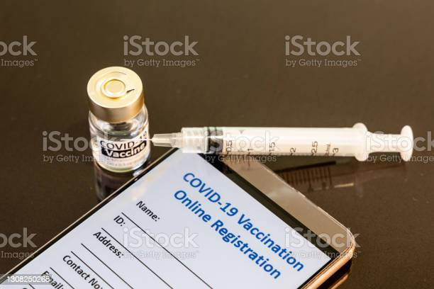
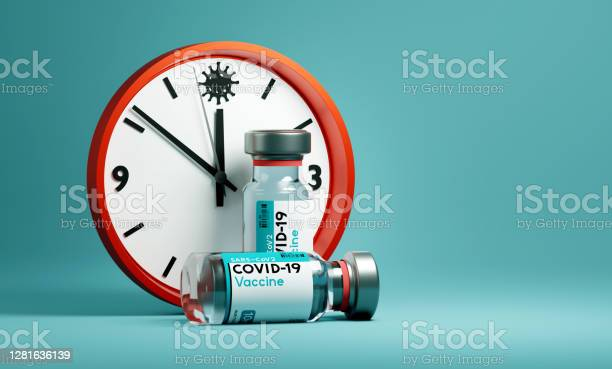
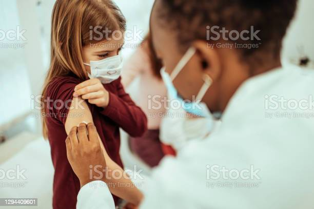

How this program works

Register
The first step is to register for this program,which lets you schedule your vaccination

Give personal details
Your age and other factors can effect the timing of your vaccination

Schedule your vaccination
We will look for openings and book two apointments on your behalf

Update your profile
After vaccinated don't forget to update your profile so that we get the records